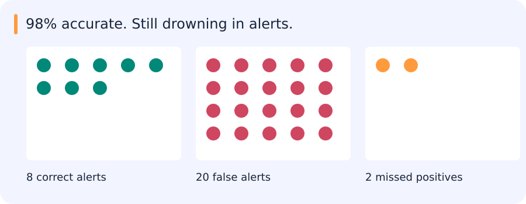

98% accurate. Still drowning in alerts.
In 1,000 cases there are 10 real positives. Your model finds 8 and raises 20 false alarms. The accuracy looks great. The alert inbox disagrees.

| Notice | Interpret | Check |
|---|---|---|
| Precision: 8 / 28 ≈ 29% | Recall: 8 / 10 = 80% | Accuracy: 978 / 1000 = 97.8% |
Reveal the catch
The useful denominator depends on whose problem you are solving.
In code: The alert inbox in six lines
tp, fp, fn = 8, 20, 2
precision = tp / (tp + fp)
recall = tp / (tp + fn)
print(round(precision, 3))
print(round(recall, 3))Expected output:
0.286
0.8The denominators encode two different questions: how useful are the alerts, and how many real positives did we find? These toy denominators are nonzero.
Try it in 60 seconds: Would you prefer 9 true alerts and 90 false alerts? State the operational cost first.
Read for understanding, not page completion. Skip what you can already explain.
Jump to a concept
Begin with the decision unit
A metric evaluates a defined set of decisions. A classification example, a predicted box, an image, a track and an event are different units. Specify labels, matching policy, excluded cases and denominators before computing. An evaluation that silently drops failed samples can reward a broken pipeline. Report their count and handle them according to the declared protocol.
Confusion counts and operating points
TP and TN are correct positive and negative predictions; FP and FN are the two errors. Accuracy is (TP+TN)/N, precision is TP/(TP+FP), recall/sensitivity is TP/(TP+FN), specificity is TN/(TN+FP), and false positive rate is FP/(FP+TN). False alarm rate is ambiguous in practice: it can mean FPR or a count per image/hour/area. State which is meant. Undefined ratios need an explicit convention rather than an unnoticed default.
If there are 10 positives among 1,000 cases and a model reports 8 TP and 20 FP, recall is 0.8, precision is 8/28≈0.286 and FPR is 20/990≈0.0202. Accuracy is 0.978, which hides the poor yield among alerts. F1 is the harmonic mean 2PR/(P+R); F-beta weights recall by beta squared. These summaries omit true negatives and do not encode every operational cost. Select a threshold against a stated target, such as minimum recall with an acceptable number of alerts.
Curves, prevalence and aggregation
A ROC curve plots TPR against FPR as the threshold varies. ROC AUC measures ranking behavior across positive/negative pairs, not calibration or performance at a specific threshold. A PR curve plots precision against recall. Its no-skill precision baseline depends on positive prevalence; two PR scores on different populations are not directly interchangeable. PR is often revealing for rare positives, but the correct choice follows the application and designated positive class.
Lowering a threshold cannot reduce recall for a fixed score list, while precision need not change monotonically at every step. Average precision sums precision weighted by recall increments under one common convention. Trapezoidal PR area, interpolated AP and detection benchmark AP may differ. Record the implementation and tie handling. Macro averaging gives each class equal weight, micro averaging aggregates counts and support weighting weights class metrics. Support-weighted precision is generally not equal to micro precision. Show per-class counts as well as averages.
Detection and segmentation
Intersection over union is intersection area divided by union area. Match detections to ground truth using a declared class and overlap rule, generally one-to-one, then accumulate TP/FP as confidence decreases. A second prediction of an already matched object is normally a duplicate FP. Detection has no obvious count of all background TN boxes, so generic binary FPR is not automatically meaningful. AP at IoU 0.5 and AP averaged over several IoUs answer different localization questions. Horizontal boxes, oriented boxes and masks require the appropriate overlap geometry.
For segmentation, pixel IoU and Dice summarize set overlap; boundary metrics and object-level recall reveal other failure modes. A large background or large object can dominate a pooled metric. State whether averaging is per pixel, per image, per class or per instance. Incomplete annotation complicates FP counts and may need ignored regions or audited subsets.
Selective prediction and calibration
An uncertainty score can decide when to abstain. Coverage is the fraction accepted; risk is the average loss among accepted cases. At full coverage, classification risk is the overall error rate, not accuracy. At zero coverage the conditional error is undefined; a plotting convention may place a zero there but it is not measured performance. Sweep the acceptance threshold to compare risk-coverage curves. A good ordering places more errors among rejected cases; no monotonic improvement is guaranteed for an arbitrary uncertainty score.
Calibration asks whether predicted probabilities agree with observed frequencies. Reliability plots, Brier score and log loss inspect different aspects; binning affects reliability diagrams and expected calibration error. A model can rank perfectly and be miscalibrated. Fit probability calibration on separate or cross-fitted data and recheck after distribution shift.
Regression
MAE averages absolute residuals; MSE averages squared residuals and penalizes large errors strongly; RMSE restores target units. Median absolute error is resistant to a few extreme residuals. MAPE divides absolute error by target magnitude and is problematic near zero. R-squared compares squared error with predicting the evaluation-set mean and can be negative. Constant targets need a defined convention. Report units, residual distributions and relevant slices alongside a scalar.
Ranking and retrieval
Precision@K is relevant results among K returned, while recall@K divides retrieved relevant results by all relevant results for that query. AP averages precision at relevant ranks under its declared denominator, and mAP averages over queries. MRR averages the reciprocal rank of the first relevant result; it ignores later relevant results. Hit rate@K asks whether at least one relevant item appears. DCG discounts graded relevance by rank, commonly using (2^rel−1)/log2(rank+1); NDCG divides by the ideal ranking's DCG. Specify how queries with no relevant results and tied scores are handled.
One hand calculation
For relevance [1,0,1,0] with two relevant items in total, precision@2=1/2, recall@2=1/2, AP=(1+2/3)/2=5/6 and reciprocal rank=1. Now insert an irrelevant first result and recompute. Use such a tiny case to verify the evaluator before trusting thousands of boxes or retrieval results. In the rescorer task, show both the full PR comparison and the actual alert policy chosen on validation data.
Original source references and provenance
Original teaching text covering the cited topics, not a verbatim mirror. These references are provenance; no external reading is required to use this chapter.
- https://adamyedidia.files.wordpress.com/2014/11/f_score.pdf
- https://developers.google.com/machine-learning/crash-course/classification/accuracy-precision-recall
- https://developers.google.com/machine-learning/crash-course/classification/precision-and-recall#:~:text=all%20malignant%20tumors.-,Precision%20and%20Recall%3A%20A%20Tug%20of%20War,-To%20fully%20evaluate
- https://developers.google.com/machine-learning/crash-course/classification/roc-and-auc
- https://developers.google.com/machine-learning/crash-course/classification/thresholding
- https://github.com/rasbt/stat479-machine-learning-fs19/blob/master/12_eval5-metrics/12_eval5-metrics__slides.pdf
- https://queirozf.com/entries/evaluation-metrics-for-ranking-problems-introduction-and-examples
- https://scikit-learn.org/stable/modules/generated/sklearn.metrics.r2_score.html#sklearn.metrics.r2_score
- https://scikit-learn.org/stable/modules/model_evaluation.html#mean-absolute-error
- https://scikit-learn.org/stable/modules/model_evaluation.html#mean-absolute-percentage-error
- https://scikit-learn.org/stable/modules/model_evaluation.html#mean-squared-error
- https://scikit-learn.org/stable/modules/model_evaluation.html#median-absolute-error
- https://stats.stackexchange.com/a/7210
- https://twitter.com/capeandcode/status/1450666977236713480
- https://www.cs.technion.ac.il/users/wwwb/cgi-bin/tr-get.cgi/2019/PHD/PHD-2019-09.pdf